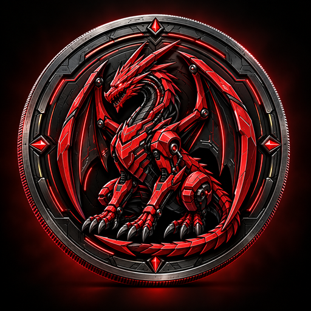

ERC-20 and token precision
ERC-20 defines the token interfaces used for balances, transfers and spending approvals. DRAC uses 18 decimal places, so balances can represent fractions of a token. Decimals describe precision, not price or market value.

Dracul CoinDRACDRACUL CYBERSEC · BASE NETWORK
Dracul Coin (DRAC) is an independent cryptocurrency project associated with Dracul Cybersec, deployed on the Base network.
TOKEN INFORMATION
Dracul Coin (DRAC) is an independent digital asset associated with Dracul Cybersec. Its ERC-20 contract runs on Base Mainnet, an Ethereum Layer 2 network. Token balances and transfers are recorded on-chain and can be inspected through BaseScan.
Maximum supply: 100,000,000 DRAC
Name, symbol and decimals checked on October 7, 2026. Source: BaseScan ↗
UNDERSTANDING DRAC
ERC-20 defines the token interfaces used for balances, transfers and spending approvals. DRAC uses 18 decimal places, so balances can represent fractions of a token. Decimals describe precision, not price or market value.
The official documentation reports a fixed maximum supply of 100 million DRAC and no public mint function. Initial allocation: 50% DAO/timelock, 20% staking reserve, 15% team vesting, 10% liquidity and 5% ecosystem. These allocations are not a measure of circulating supply.
DRAC belongs to Base Mainnet (chain ID 8453). Wallet transactions on this network use ETH for gas. Its documented market is the WETH/DRAC pair on Uniswap v2; WETH is wrapped Ether. Select Base and verify the full contract address when locating the asset.
The repository documents token, governance, staking, timelock and team vesting contracts. It also records a staking caveat: deposited tokens do not automatically preserve each user’s voting power. The published security review is internal; the project does not claim an independent third-party audit.
CONTRACT ADDRESS
Use the contract address to identify DRAC on Base. Tokens with similar names may have different addresses.
0xb193cFE2E4A807Ff3dF920139bfA3785F8094c70UNISWAP · BASE
The official repository identifies Uniswap v2 on Base as the canonical market for Dracul Coin, paired with Wrapped Ether (WETH).
0xb6e16DBaA61B188Ef6ccF845E38540471854C3c2The repository describes liquidity as small and experimental. Prices and available liquidity can change significantly; consult the current quote in Uniswap before confirming a swap. Network fees are separate from the pool trading fee.
Source: official project repository ↗OFFICIAL PROJECT
Dracul Coin has its own contract, repository and project identity. The DRAC ticker may also be used by unrelated tokens; a shared symbol does not imply affiliation.
Contract source, deployment metadata, documentation and development history are published in the project repository.
Official GitHub repository ↗Fábio Silva Monteiro · Dracul Cybersec
Professional profile on LinkedIn ↗The official repository identifies a Uniswap v2 WETH/DRAC pool. See its on-chain activity and the project documentation for details.
WETH / DRAC pool on Base ↗